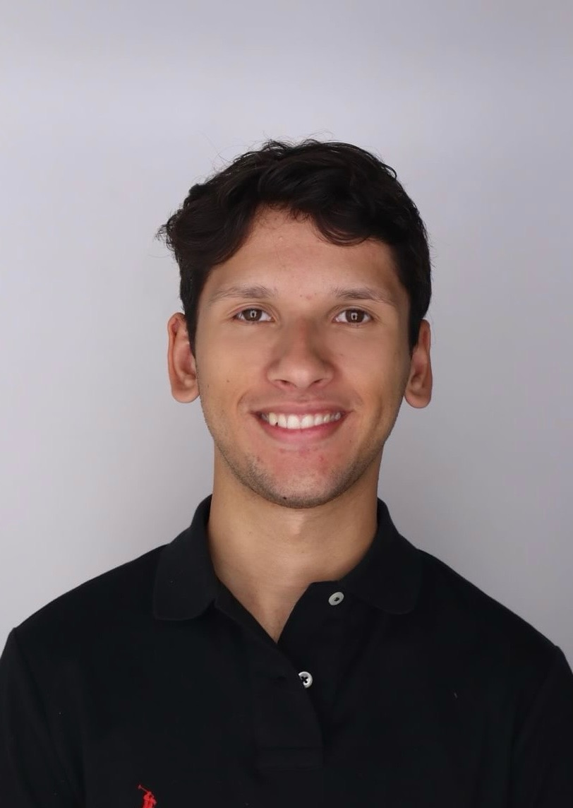
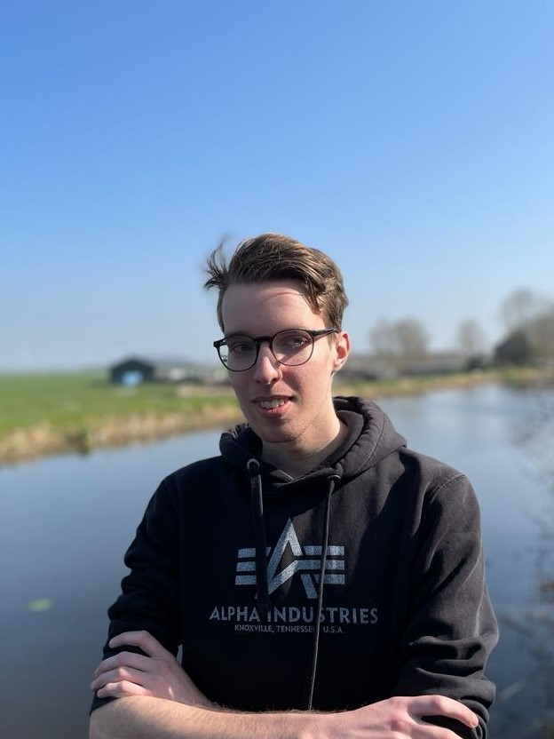
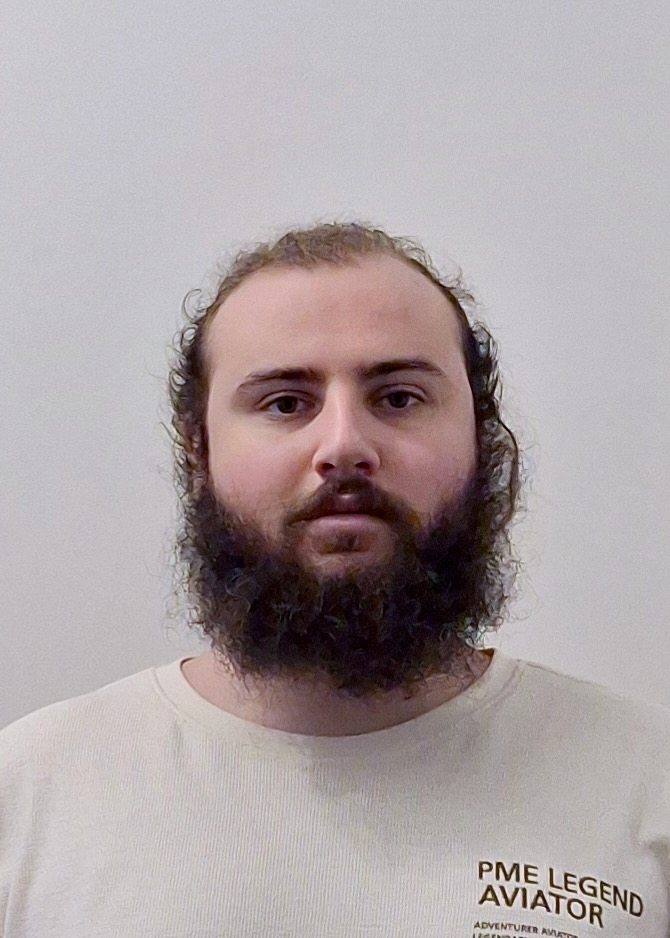

Group members
Nicolas Penders
My name is Nicolas Penders. I am an information science student at Utrecht University and I am currently in my last year of the bachelor's program. I am from the Netherlands and I am 24 years old. After this bachelors I am interested in a masters in business analytics and hoping to go into consultancy. I'm currently doing my bachelors thesis on AI on sustainability reporting. I am looking forward to working on this project.
Floris de Gruijter
My name is Floris. I am currently in my last year of studying at Utrecht University for my bachelors. Alongside WebTech I am also working on the softwareproject where we are building an application for tracking user behaviour. The goal of the project is to aid researchers in analyizing user behaviour and improving work satisfaction. After my bachelors I am looking into a masters in computing science, otherwise I am also considering looking for a fulltime job.
Abracha Koens
My name is Abracha Koens. I am a first-year computer science student at Utrecht University. So far, the bachelor has not disappointed. It has introduced me to the field and has presented interesting problems and projects to work on. I have yet to determine the specific path that I want to pursue within the bachelor.
